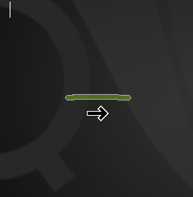
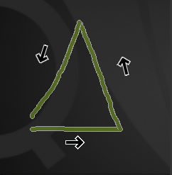
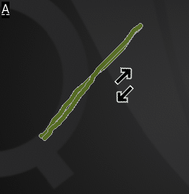
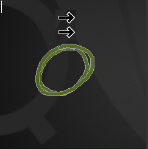
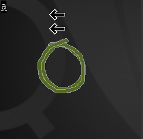
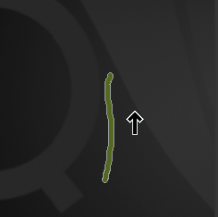

|
Home · All Namespaces · All Classes · Grouped Classes · Modules · Functions | |
Qt Extended provides two input channels to address the issue of text input, given the lack of both screen real-estate and convenient keyboards typical of mobile devices. The Phone Keys input method is intended for phones with the common 0-9, # and * buttons. The Full Screen Handwriting input method is intended primarily for touch screen devices, but can be used with any sort of pointing device, including a mouse. These input methods are not mutually exclusive, and a device equipped with both phone keys and a pointing device can take advantage of both.
Additionally, Qt Extended offers virtual keyboards for devices with touch screens. These input methods offer a widget displaying the characters that can be touched or clicked on to input text. The precitive keyboard adds dictionary look-up capabilities, allowing it to be used with fingers instead of a stylus.
Given the standard 0-9, * and # keys, Qt Extended uses a dictionary to determine the most likely intended input. For example, the '6' key on most phones translates to 'm', 'n', or 'o'. Simply pressing the key twice will result in a best guess of "no". The '*' key is used to select between different options. In this example , pressing the '*' key will toggle between "no" and "on" - the two matches for the input "66".
When a pointing device such as a mouse or touch screen is available, the user can enter text by drawing a character at a time. Qt Extended is capable of composing characters out of multiple strokes, for example in the case of 't' or '4', provided the additional strokes are entered quickly. A shadow of the original stroke is left onscreen to help guide the next stroke. Qt Extended uses input hints to guide the input guess, such as in the case of the letter 's' and the number '5', where the strokes may be difficult to differentiate.
The user is able to change how the input method interprets input by switching between input modes. With Phone Keys this is accomplished by pressing and holding the '#' key. Using Full Screen Handwriting, the user enters the mode select stroke, which looks like a triangle pointing upwards, and is drawn from the bottom left counter-clockwise. Other commands to the input method are outlined in the table below:
| Effect | Phone Keys | Full Screen | Stroke Directions | Stroke Diagram |
|---|---|---|---|---|
| Space/Accept Word | Press '#' | Draw a horizontal line, left-to-right. | Right |  |
| Mode Select | Hold '*' to change modes | Draw an upward-pointing triangle counter clockwise, starting in the bottom-left corner | Right, Up-Left, Down-Left. |  |
| Next Guess | Press '*' | Draw a diagonal line from bottom-left to top-right and back again | Up-Right, Down-Left |  |
| Word Picker | Stroke Only | 2 clock-wise circles on top of each other, starting from the top | Down-Right, Down-Left, Up-Left, Up-Right, Down-Right, Down-Left, Up-Left, Up-Right |  |
| Symbol Picker | Press and Hold '#' | 2 counter-clock-wise circles on top of each other, starting from the top | Down-Left, Down-Right, Up-Right, Up-Left, Down-Left, Down-Right, Up-Right, Up-Left |  |
| Shift (next character capital) | Press '0' | Draw a vertical line from bottom to top | Up |  |
Qt Extended currently offers 2 virtual keyboards.
The first, The Qt Extended Keyboard, is a straightforward virtual keyboard. It shows a qwerty keyboard, and pressing a key on the keyboard creates a key event for that key and passes it on to the focus widget. Holding down a key will create autorepeats, just like a normal keyboard. There is a small arrow on the far right-hand side (next to the '' key) that will show and hide the insert, home, delete, end, page up, and page down keys.
The Caps Lock, Shift, Control, and Alt keys are "sticky", meaning that clicking on them toggles them on and off. This allows for complicated key-combinations to be performed with a single pointing device.
The keyboard also uses the dictionary to suggest words based on the current input. These suggestions are displayed in the bar at the top of the keyboard, and clicking one of these suggestions enters the rest of that word followed by a space.
The keyboard is packaged in two different ways. Normally, the keyboard widget "floats" over the text, and jumps to the top or bottom of the screen in order to not cover the cursor. In this mode, the keyboard widget can be hidden and shown from the context menu. As the DockedKeyboard, the keyboard is docked to the bottom of the screen, resizing the space available for applications.
The second keyboard is the predicitve keyboard. This keyboard is designed for use with fingers, which are significantly less accurate than a pointing device. The predictive keyboard analyses uses a dictionary and analysis of the input to resolve ambiguities.
The keyboard presents a familiar Qwerty keyboard. To use the keyboard, just press each letter in order, and then press your word on the bar above the keyboard to accept the word. If the word you intended is not the central word, pressing on it will bring it to the center, and a second press on it in the central position will accept it.
If the word is not in the dictionary, the keyboard can also be used in a letter-at-a-time mode. Keep pressing on your letter until a small viewing bubble appears, and move your finger slightly to focus it on your letter and release to enter that character.
The predictive keyboard recognizes several strokes. To stroke, press somewhere on the keyboard and, keeping your finger pressed, move sharply in the appropriate direction.
Stroking up and down changes "board". For example, stroking up from the lowercase board will bring up the uppercase board. Stroking up again will bring up the symbols board, which contains punctuation, symbols, and the carriage return. Note that you must select symbols one at a time by holding down your finger, because the dictionary cannot be used to differentiate symbols.
Stroking down from the lowercase board brings up the number board. The boards are cyclic, so stroking up from the symbol board will also get to the numbers board.
Stroking to the right accepts words and enters spaces. Stroking to the left or pressing the backspace key will cancel a word. Stroking to the left while not entering the word will backspace.
The predictive keyboard supports input hints, and will automatically switch to the most appropriate board for the input field. It also supports autocapitalisation, and on fields where this is hinted will automatically switch from upper to lowercase after the first letter.
An input widget may hint that it would prefer int or phone to indicate that numbers are more likely, or text or words that it would prefer letters. The words hint also suggests that a dictionary can be used to make better guesses at whole words, and allows the user to select from likely interpretations of a series of strokes. The text hint accepts characters one at a time, and is useful when unusual words are being entered, such as names or passwords.
The following table describes the four modes used by input methods to enable or disable capitalization and guide input guessing:
| Mode Name | Mode Type | Description |
|---|---|---|
| aa | word recognition | the input method uses a dictionary to find likely matches to the input a word at a time (the aa indicates that two key-presses will result in input of two characters). |
| Aa | word recognition | as for aa however the first letter of the word is capitalized |
| abc | character recognition | the input method allows the user to confirm each letter as it is entered. |
| Abc | character recognition | as for abc mode however the first letter of the word is capitalized |
These modes are handled differently depending on the input method used:
| Copyright © 2009 Trolltech | Trademarks | Qt Extended 4.4.3 |